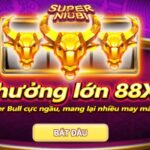

NỔ HŨ KG88
Hé Lộ Mẹo Chơi Xúc Xắc Màu May Mắn Hiệu Quả Nhất 2024
POSTED ON THÁNG SÁU 27, 2024 BY ADMINKG88

Mẹo chơi xúc xắc màu may mắn kinh nghiệm chơi luôn được các cược thủ quan tâm. Đây là một trong những sản phẩm game slot hấp dẫn dẫn trên thị trường cá cược online. Trò chơi sở hữu giao diện tối ưu cùng mức trả thưởng giá trị. Hãy cùng heo dõi bài viết dưới đây của KG88 để tìm hiểu rõ hơn về tựa game này nhé.
Giới thiệu về trò chơi xúc xắc màu may mắn là gì?
Trước khi đi tìm hiểu mẹo chơi xúc xắc màu may mắn hãy cùng đi tìm hiểu kháu niệm của trò chơi. Được biết đến là một trong những sản phẩm game mới lạ và thu hút đông đảo người chơi. Khi may mắn nổ hũ, người chơi sẽ có cơ hội nhận những phần thưởng siêu giá trị, được quyết định bởi nhà cái
Giới thiệu về trò chơi xúc xắc màu may mắn hấp dẫn
Để giành được chiến thắng trong trò chơi này, người chơi cần dành thời gian nghiên cứu và tìm hiểu kỹ luật chơi. Đồng thời, việc áp dụng những chiến thuật và kỹ năng chính xác sẽ giúp tăng hiệu quả đáng kể.
Trò chơi nổ hũ tại KG88 được người chơi đánh giá cao nhờ vào những yếu tố cấu thành chất lượng. Tại sảnh chơi này, người chơi sẽ được trải nghiệm không gian giải trí và kiếm tiền đỉnh cao. Nếu bạn đam mê cá cược, không nên bỏ qua Slot game này.
Với sự kết hợp giữa yếu tố may mắn và mẹo chơi xúc xắc màu may mắn hứa hẹn mang lại cho người chơi những giây phút giải trí tuyệt vời cùng cơ hội nhận thưởng hấp dẫn.
Luật và mẹo chơi xúc xắc màu may mắn hiệu quả 100%
Game xúc xắc màu may mắn với luật chơi đơn giản và dễ hiểu. Trên bàn cược anh em sẽ thấy có 6 ô màu là vàng, trắng, hồng, xanh lam, đỏ, xanh lá. Mỗi mặt của xúc xắc sẽ tương ứng với phần thưởng người chơi sẽ nhận được. Người chơi có nhiệm vụ dự đoán và đặt cược vào màu sắc mà mình tin sẽ xuất hiện.
Luật và mẹo chơi xúc xắc màu may mắn hiệu quả 100%
Hướng dẫn các bước tham gia xúc xắc màu may mắn
Sau đây là một số thao tác giúp anh em tham gia vào game slot xúc xắc màu may mắn và rinh về tiền thưởng khủng:
- Đăng ký tài khoản: Trước hết người chơi cần đăng ký một tài khoản cá cược tại trang web hoặc ứng dụng cung cấp trò chơi nổ hũ trực tuyến.
- Nạp tiền vào tài khoản: Sau khi đăng ký tài khoản thành công thì người chơi cần nạp tiền vào tài khoản để bắt đầu tham gia các vòng quay.
- Chọn bàn chơi và đặt cược: Người chơi hãy chọn bàn chơi phù hợp và tiến hành đặt cược vào màu sắc mình sẽ dự đoán.
- Chọn màu xúc xắc sẽ xuất hiện và chờ kết quả: Mẹo chơi xúc xắc màu may mắn đó là sau khi đặt cược, người chơi quay xúc xắc và chờ đợi kết quả. Nếu như màu sắc xuất hiện trùng với dự đoán, người chơi sẽ nhận được phần thưởng hấp dẫn.
Biểu tượng trong xúc xắc màu may mắn thành viên nên biết
Dưới đây là một số biểu tượng nhất định người chơi không được bỏ qua:
- Wild: Tức là biểu tượng thay thế cho tất cả những biểu tượng khác nhằm tạo ra một tổ hợp chiến thắng.
- Scatter: Thành viên chỉ cần có được 3 viên xúc xắc tại bất kỳ vị trí nào thì đều sẽ có cơ hội nhận thưởng giá trị x100.
- Silver Bar, Gold Bar: Biểu tượng mang đến lợi nhuận cao hơn cho người chơi tùy vào lựa chọn.
- Free Spin: Biểu tượng cho phép người chơi quay miễn phí mà không hề mất một khoản tiền vốn nào vẫn được nhận thưởng.
Mẹo chơi xúc xắc màu may mắn giành chiến thắng lớn
Mặc dù trò chơi slot xúc xắc màu dựa nhiều vào yếu tố may rủi, nhưng nếu bạn biết cách tận dụng và kết hợp các tính năng một cách thông minh, khả năng chiến thắng của bạn sẽ được nâng cao đáng kể. Dưới đây là một số bí quyết cụ thể giúp bạn vừa gia tăng cơ hội chiến thắng vừa giảm thiểu rủi ro khi tham gia trò chơi này:
Mẹo chơi xúc xắc màu may mắn giành chiến thắng lớn
Hiểu rõ luật chơi và các tính năng của game
Trước khi bắt đầu, hãy đảm bảo bạn đã nắm vững cách thức hoạt động của trò chơi cũng như các tính năng đặc biệt mà nó cung cấp. Điều này giúp bạn có chiến lược chơi hợp lý và tận dụng tối đa các cơ hội thắng lớn.
Quản lý vốn liếng một cách hiệu quả thông minh
Mẹo chơi xúc xắc màu may mắn đặt ra một ngân sách cụ thể cho mỗi lần chơi và tuân thủ nó. Đừng bao giờ đặt cược nhiều hơn số tiền người chơi đang có. Việc quản lý vốn tốt sẽ giúp bạn chơi lâu dài hơn và tăng khả năng thắng.
Khi chơi game nên sử dụng các phần thưởng và ưu đãi
Nhiều nhà cái thường cung cấp các phần thưởng hoặc ưu đãi khi bạn tham gia chơi slot xúc xắc màu. Hãy tận dụng những cơ hội này để gia tăng vốn và cơ hội chiến thắng của mình.
Mẹo chơi xúc xắc màu may mắn thử bản free trước khi chơi bằng tiền thật
Việc chơi thử sẽ giúp bạn làm quen với trò chơi và phát triển chiến lược mà không phải lo lắng về việc mất tiền. Sau khi đã tự tin, bạn có thể bắt đầu chơi bằng tiền thật.
Xúc xắc màu may mắn dù chỉ mới ra mắt chưa lâu nhưng đã thu hút được đông đảo số lượng người chơi tham gia. KG88 hy vọng khi lựa chọn trải nghiệm, người chơi sẽ được trải nghiệm một cách an toàn tại một đơn vị uy tín. Chắc chắn những mẹo chơi xúc xắc màu may mắn trên đây sẽ giúp anh em giành chiến thắng.
BÀI VIẾT MỚI


Mẹo Chơi Siêu Bò Tót B – Game Nổ Hũ Đình Đám 2024